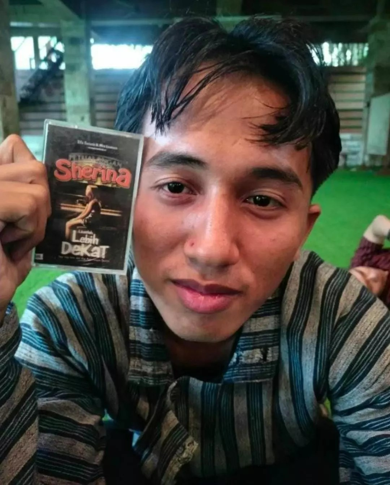

Bab Diri
Biodata
Kartu identitas redaksi — data diri, lelakon pawiyatan, kareman, lan kanal resmi.


| Nama Jangkep | Arya Wira Pratama |
|---|---|
| Taun Lair | 2008 |
| Domisili | Trenggalek, Jawa Timur |
| Status | Mahasiswa |
| Kegiatan | Staff IT Perpustakaan UNIDA Gontor & pengajar TPA |
| Kareman | Music, Coding, Running |
| Fokus | Web & Pemrograman |
| @aryas.note | |
| GitHub | aksara26 |
Mahasiswa · Staff IT Perpustakaan · Pengajar TPA
Lelakon Pawiyatan
-
2012 – 2014
TK Aisyiyah Muria
Ponorogo — wiwitan sinau ing pawiyatan kanak-kanak.
-
2014 – 2018
SDMT
Ponorogo — ngleksanani pawiyatan dhasar.
-
2018 – 2020
SDIT Permata Ummat
Nglajengake pawiyatan dhasar.
-
2020 – 2026
Pondok Modern Darussalam Gontor
Pawiyatan menengah (SMP – SMA/KMI) ing pesantren.
-
2026 – saiki
Universitas Darussalam Gontor
Nglajengake pawiyatan luhur, jurusan Teknik Informatika.
“Dunia tidak pernah benar-benar kehilangan jejak. Kebaikan meninggalkan cahaya yang kelak kembali menerangi langkahmu; kejahatan meninggalkan bayang-bayang yang suatu hari akan mengejarmu — barangkali seratus kali lebih panjang dari bayangan yang kau tinggalkan.”
Sesanti pribadi — Arya Wira Pratama